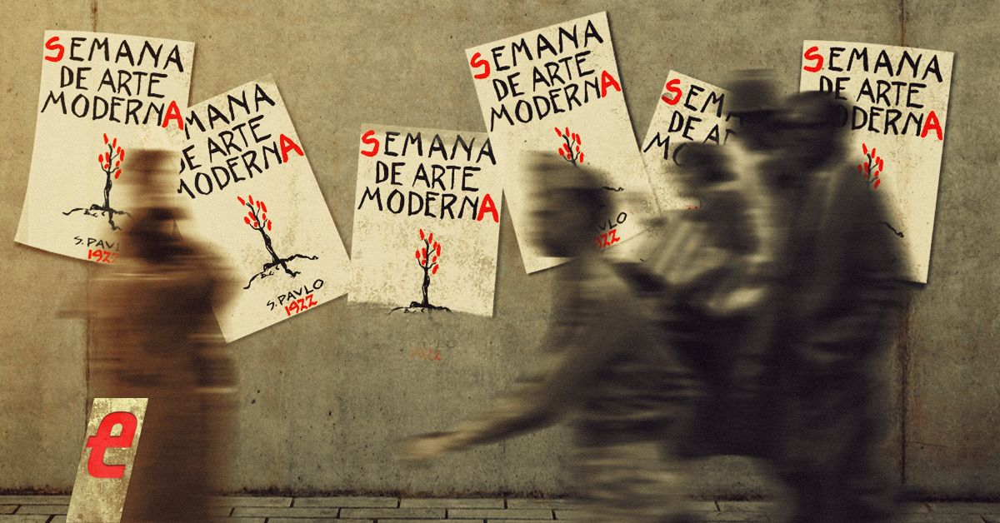

A arte contemporânea abrange as produções artísticas do século XX até os dias atuais, enfatizando o conceito e a ideia por trás da obra tanto quanto a técnica. Ela se caracteriza pela diversidade de linguagens, técnicas e materiais, pela fusão da arte com a vida cotidiana, e pelo uso de novas tecnologias. Obras contemporâneas muitas vezes desafiam as definições tradicionais de arte, priorizando a experiência, a reflexão e a interação com o público.

SOBRE A ARTE COMTEMPORÂNEA
Escreva aqui um texto explicando seu tema escolhido da BNCC.
CONTEÚDO PRINCIPAL
Escreva aqui um texto explicando seu tema escolhido da BNCC.